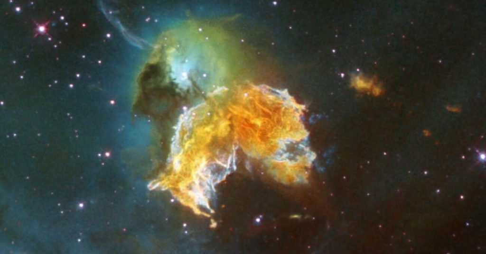

ဒီ တွင်းနက်တွေဟာ ဆွဲငင်အား ကြီးမားလွန်းလို့ ဒြပ်ပစ္စည်း တွေတင်မက အလင်းရောင် ကိုတောင် လွတ်ထွက်မသွားအောင် ဖမ်းဆွဲ ထားနိုင်စွမ်း ရှိပါတယ်။
နေထက် အရွယ် အဆ ၂၀ ခန်နဲ့ အထက် ဒြပ်ထု ရှိတဲ့ ကြယ်တွေ သေသွားတဲ့ အခါ တွင်းနက်တွေ ဖြစ်လာ ကြပါတယ်။ ဒီ လို ကြယ်ကြီးတွေ သေဆုံးသွား တဲ့အခါ ဆူပါနိုဗာ ပေါက်ကွဲမှုကြီး ဖြစ်လာပြီး ကြွင်းကျန်ရစ်တဲ့ ဒြပ် ပစ္စည်း တွေကနေ တွင်းနက်တွေ ဖြစ်လာတာ ဖြစ်ပါတယ်။

စကြာဝဠာ ထဲက ဂလက်ဆီ ကြယ်အစုအဝေး ကြီးတွေ အားလုံး နီးပါးရဲ့ ဗဟိုမှာ အလွန် ကြီးမားတဲ့ မဟာ တွင်းနက်ကြီးတွေ ရှိကြပါတယ်။ ဒီ မဟာ တွင်းနက်ကြီးတွေရဲ့ ဒြပ်ထု ပမာဏဟာ နေအစင်းပေါင်း သန်းနဲ့ချီပြီး ရှိကြပါတယ်။
နာဆာက ပညာရှင် တွေဟာ ဒီ ထူးဆန်းတဲ့ တွင်းနက်ကြီး တွေရဲ့ သဘော သဘာဝ ကို သိနိုင်ဖို့ အသေးစိတ် သုတေသနပြု လေ့လာ ခဲ့ကြပါတယ်။
နာဆာ အဖွဲ့ကြီးရဲ့ အဆိုအရ ဒီ ကွန်ပြူတာ အထူးပြုလုပ်ချက် ရရှိနိုင်ဖို့ တွင်းနက်တွေရဲ့ လှုပ်ရှားနှုန်းကို အဆ ၂၂,၀၀၀ ခန့် ပိုမြန်အောင် ပြုလုပ် ခဲ့ကြပါတယ်။ နောက်ပြီး ကမ္ဘာက လှမ်းကြည့်ရင် မြင်ရမယ့် ပုံသဏ္ဍာန် ဖြစ်အောင်လဲ ဖန်တီး ခဲ့ကြပါတယ်။
တွင်းနက်တွေဘယ်လိုဖြစ်လာသလဲ
တွင်းနက်တွေဟာ ကြယ်တွေ သေပြီး ဖြစ်လာတာ ဖြစ်ပါတယ်။ နေထက် အဆများစွာ ကြီးမားတဲ့ ကြယ်ကြီးတွေ လောင်ဆာ ကုန်ခမ်း သွားတဲ့ အခါ ဆူပါနိုဗာ ပေါက်ကွဲမှုကြီး ဖြစ်လာပါတယ်။
ဒီ ပေါက်ကွဲမှုမှာ ကြယ်ရဲ့ အပြင်လွှာက အာကာသ ထဲကို လွင့်စင် ထွက်သွားပါတယ်။ ကြယ်ရဲ့ အူတိုင်ကတော့ အချင်းချင်း ဆွဲငင်အားကြောင့် တဖြည်းဖြည်း သေးငယ် သွားပါတယ်။
ဒီလို အရွယ် သေးငယ် သွားပေမယ့် အူတိုင်ရဲ့ ဒြပ်ထု ပမာဏ ကတော့ ပြောင်းလဲခြင်း မရှိပါဘူး။ ဒီတော့ ဒီ သေးငယ်သွားတဲ့ အူတိုင်ရဲ့ ဒြပ်ထု သိပ်သည်းဆ က အရမ်း များလာပါတယ်။
ကြယ်ရဲ့ အူတိုင် အရမ်း သေးငယ် သွားတဲ့ အခါ ဒီ အူတိုင်ရဲ့ အနီးပါတ်ခြာလည်မှာ သက်ရောက်တဲ့ ဆွဲငင်အားကလဲ အဆမတန် ကြီးမား လာပါတယ်။
ဘယ်လောက်ထိ ဆွဲငင်အား ကြီးလဲဆို အူတိုင်ရဲ့ အနီးအနားက ကပ်ပြီး ဖြတ်သွားတဲ့ အရာဝတ္ထု တွေတင် မက အလင်းရောင် ကိုတောင် လွတ်ထွက် မသွားအောင် ဆွဲထားနိုင်စွမ်း ရှိပါတယ်။
တွင်းနက်တွေကို တိုက်ရိုက် မမြင်နိုင် ပေမယ့် တွင်းနက်ရဲ့ အနီး အားက တွင်းနက်ထဲကို ဆွဲငင်ခံရတဲ့ ဓါတ်ငွေ့တွေ အပူချိန် မြင့်ပြီး အရောင် တောက်လာတာ ကို မြင်တွေ့ နိုင်ပါတယ်။ ဒါ့အပြင်တွင်းနက် တွေကနေ X-ray နဲ့ အခြား ရောင်ခြည်တွေ ကိုလဲ ထုတ်လွှတ် ပေးပါတယ်။ ဒီ ရောင်ခြည် တွေကို ရေဒီယို တယ်လီစကုပ် တွေကနေ ဖမ်းယူ နိုင်ပါတယ်။
အခု နာဆာက ထုတ်ပြန်တဲ့ တွင်းနက်တွေရဲ့ ဗီဒီယိုမှာ ဒီ တွင်းနက်တွေရဲ့ အရွယ်အစားကို ကျွန်တော်တို့ နေရဲ့ အရွယ်အစားနဲ့ နှိုင်ယှဉ် ပြထားပါတယ်။ ဒီနေရာမှာ တွင်းနက်ရဲ့ အရွယ်အစား ဆိုတာ ဗဟိုကနေ event horizon ခေါ်တဲ့ “ပြန်လမ်းမဲ့ နယ်ခြား” အထိ အကွာအဝေးကို ဆိုလိုတာ ဖြစ်ပါတယ်။